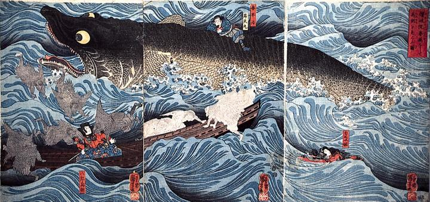

喜平治と舜天丸を背に乗せた巨大な怪魚。
著作者：歌川国芳／出典：親書誌：M80_naprstek_0018：讃岐院眷属をして為朝をすくふ図；サヌキノインケンゾクヲシテタメトモヲスクウズ／日付：2011／資源識別子：M80_naprstek_0018_0001_0000
Copyright (c)2010- International Research Center for Japanese Studies, Kyoto, Japan. All rights reserved.